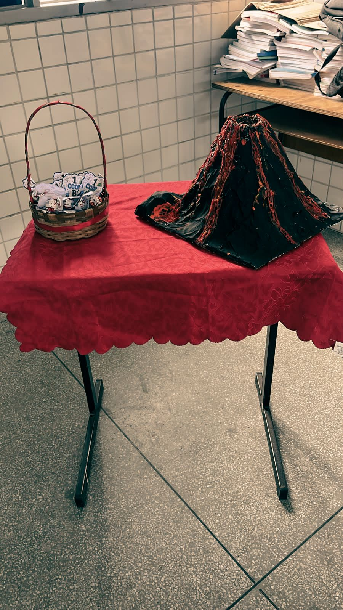
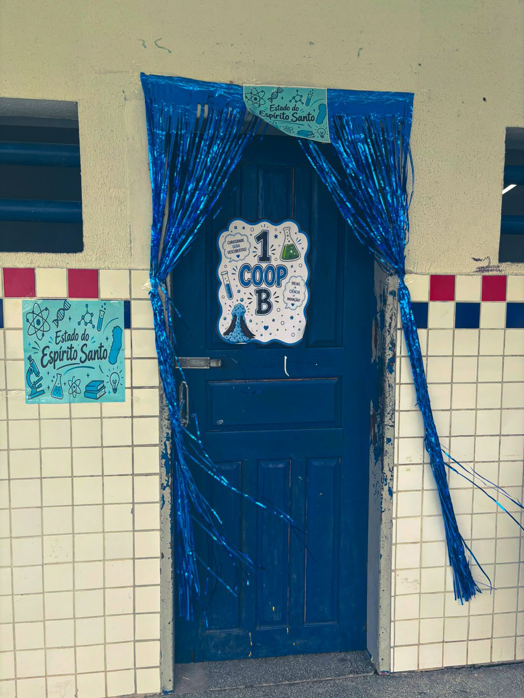

Experimento
Lima Castro Projeto
PIBIC Jr
Feira de Ciências 2026
Na Feira de Ciências 2026, a turma representou o estado do Espírito Santo, apresentou o experimento do vulcão de espuma e pesquisou cientistas capixabas de Química e Biologia.

Experimento

Cientistas
Pesquisadores ligados ao Espírito Santo escolhidos pela turma, separados por área.
UFES · Departamento de Química
Professor da Universidade Federal do Espírito Santo (UFES) desde 2006, com experiência em Química Orgânica e ênfase em Ressonância Magnética Nuclear.
UFES · Departamento de Química
Professor da UFES desde 1992, com trabalhos científicos em Quimiometria e Química do Petróleo.
UFES · Departamento de Química
Doutor em Química pela USP, atua em Físico-Química, na subárea de Eletroquímica, com eletrocatalisadores e tratamento de efluentes.
Santa Teresa (ES), 1915 · 1986
Naturalista nascido em Santa Teresa (ES), pesquisou espécies da Mata Atlântica, especialmente beija-flores e orquídeas.
Em 1949, fundou o Museu de Biologia Professor Mello Leitão, em Santa Teresa.
Santa Teresa (ES), 1899 · 1987
Agrônomo, trabalhou por 26 anos no Serviço de Caça e Pesca do Ministério da Agricultura.
Em 1942, foi designado para organizar o Parque de Refúgio e Criação de Animais Silvestres Sooretama, cujos trabalhos dirigiu de 1943 a 1959. Depois estudou o muriqui (mono) como pesquisador do CNPq.
Orquídeas e bromélias
Fotos
Toque em uma foto para ver em tamanho maior.